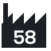

Building 58 Has a Front Door
Building 58 has its own site at building58.ai. I put it up last week and never wrote about it here. It shows how the office works, the 3D building you can walk into, the parts under the hood, the docs and the trailers.
This post explains the building mark and the tower on the site, and what each part stands for. Then it covers where the room runs. It no longer runs on my laptop. It runs on a machine that stays on, and I open it in a browser at a private address under building58.ai, so it keeps working when I close the lid. The next step is the lobby: sign in at building58.ai and go up to my office, with every room I run, its state, and one click to open it.
What is on the site
Building 58 is a set of rooms where Claude Code sessions work as a team. Each room has a Lead, a PM, Devs and reviewers, and I am the manager. The posts on this blog have followed it from the first office to the office that builds itself. Until now those posts were the only place to read about it. The site puts it all in one place:
- Walk in: a tour of a room, with the Board, the desks and the workers.
- The building: the 3D tower, with one floor for each room.
- Under the hood: the parts that make it work, such as sessions that survive a restart, per-task checkouts, Autopilot and the evals.
- Roadmap: what is built, what is in development, and what is only an idea.
- Docs and Run it: how to start a room of your own.
The home page says what it is: a way to manage Claude Code sessions like a software team, not a stack of terminals. The building page says what the project is trying to do: build a building where agents earn the right to work on their own. Each new power, such as letting the room merge a reviewed pull request, is a level on the trust ladder that I turn on only when the evidence supports it.
The mark is an old machine works
The name comes from Kurt Vonnegut's Player Piano. In the novel, Building 58 is the oldest building at the Ilium Works. It is an old machine shop, where machines now do the work that people used to do. So the mark is a factory, not a robot or a face.

The faviconEach part of the mark has a meaning:
- The sawtooth roof. Old factories used this roof to light a long shop floor from above. Each tooth is one bay of the floor. In Building 58, each bay is a desk where a session works.
- The smokestack. A stack shows that the works is running. The amber band on the stack is the one color in the mark. It is the same amber as the "Run it" button on the site, because running a room is the thing the site asks you to do.
- No windows. Windows on a small building look like eyes, and the building turns into a face. The workers in Building 58 are Claude Code sessions with roles, not characters, so the building has no face.
- The number in the wall. On the favicon, "58" is cut out of the wall, the way old mills painted a building number on the brick. At the size of a browser tab, the number is what you read.
The tower: one room is a team, a building is a company
The mark is one building seen from the street. The 3D tower on the site is the same building seen from inside. Each floor is a full office suite on its own repo, with its own Board, its own chat and up to nine desks. Every suite follows the same house rules and the same trust ladder, and each one has a person as its manager.
The first floor is the lobby, which is the site. The second floor is the first room, which works on Building 58's own repo and restarts itself on each version it merges. Room B and Room C each work on a repo of their own. One of them is testing an old project of mine, as The Second Office's First User described. Four floors are empty and wait for the next projects. The top floor is planned for an executive office, which would set goals for the suites below it.
A building is more than one team. The tower shows where the project is going: from one room for one repo, to a set of rooms that each run on their own and a floor that coordinates them.
Where it runs now
When I first put the site up, all of this ran on my laptop. A room is one container, built from a published image, and the browser opened it on localhost. That worked, but the room stopped when the laptop slept, a busy room slowed the laptop, and I could only open the room from that laptop. The building page lists what has to be true before more floors open, and the first item is that a suite recovers on its own, from a restart or from a closed laptop. A room on my laptop could not meet that.
Now my room runs 100% remote Built. It runs on a rented machine that stays on, from the same image and the same setup command I used on my laptop. I open it in a browser at a private address under building58.ai, after I sign in. It is for me only, with my own Claude and GitHub sign-ins. My laptop can be closed, and the room keeps taking tickets.
The parts that made the move small were already in place. The image is published for arm64 and amd64, and the release workflow smoke-tests it. The container has a health check, restarts after a reboot, and has limits on CPU and memory. Its volumes keep the room's state and repos through a new image, and one setup command starts it on a new server. The room still updates itself after each merge, on the server, the same as it did on my laptop.
Then: the lobby
A room on a rented machine solved the closed laptop. It does not give me one place to go. Each room has its own address, and I would have to remember which room runs where. So the next step is a front door for my rooms Planned. I go to building58.ai, sign in, and go up to my office.
I did not plan it this way, but the tower already had a name for that front door. Floor 1 in the directory is the lobby, and the lobby is building58.ai. A real lobby has a sign-in desk and a directory board that shows who is on each floor. That is the page I need: you sign in at the lobby, read the board, and go up to a room. The rooms I own are my office, and each one is a floor. It needs three screens:
- Sign in. The desk at the front door of the lobby, and the only thing a person sees before it.
- The lobby. The directory board for my office, with one row for each room: its name, its repo, where it runs, and its state, such as running, starting, stopped or offline. The row also shows how many items wait on me, which version the room runs, and when it was last active. Each row has Open, and Stop or Start. The page gets each room's state from the health check that every room already has.
- The room. The room page I use today, at the room's own address, with one new thing: a thin bar on top. The bar switches to another room, goes back down to the lobby, and signs out.
The lobby only points to rooms. When I open a room, the browser goes to that room's own address. The work, the chat and the sign-ins stay in the room, and the lobby holds none of them. Each room keeps one owner and one repo, like the floors in the tower.
This part is done when I can do this from my phone: go to building58.ai, sign in, see each room with its correct state, open one, and switch to another without typing an address.
The first version has one room in it, the one on the rented machine. Then the other floors can follow it, one room per floor An idea. A new room screen, where I pick a repo and a machine size and the room starts by itself, comes after that An idea. When those are done, the building on the site will match a building that actually runs somewhere, with the lights on while I am away from my desk.
References
- building58.ai, the site
- The building, the 3D tower and the directory
- Building 58 docs
- Building58, the code
- Earning the Next Rung, the previous post